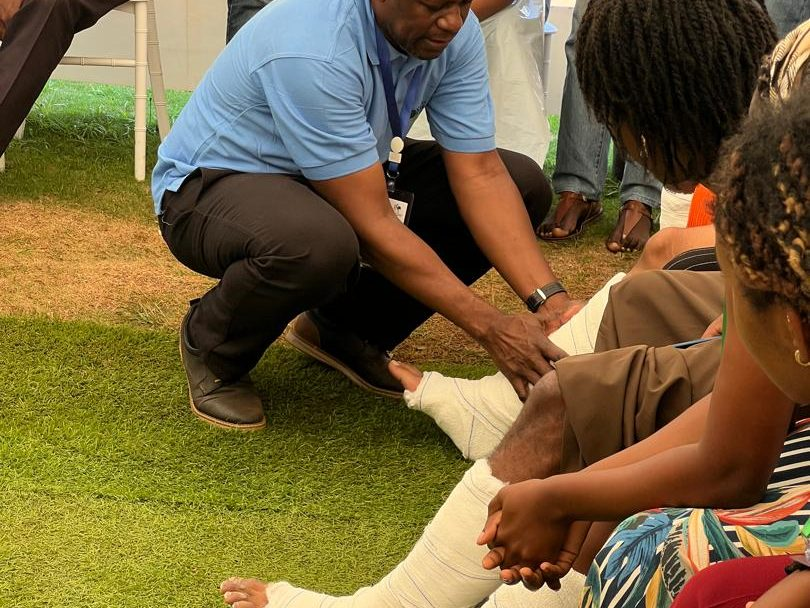
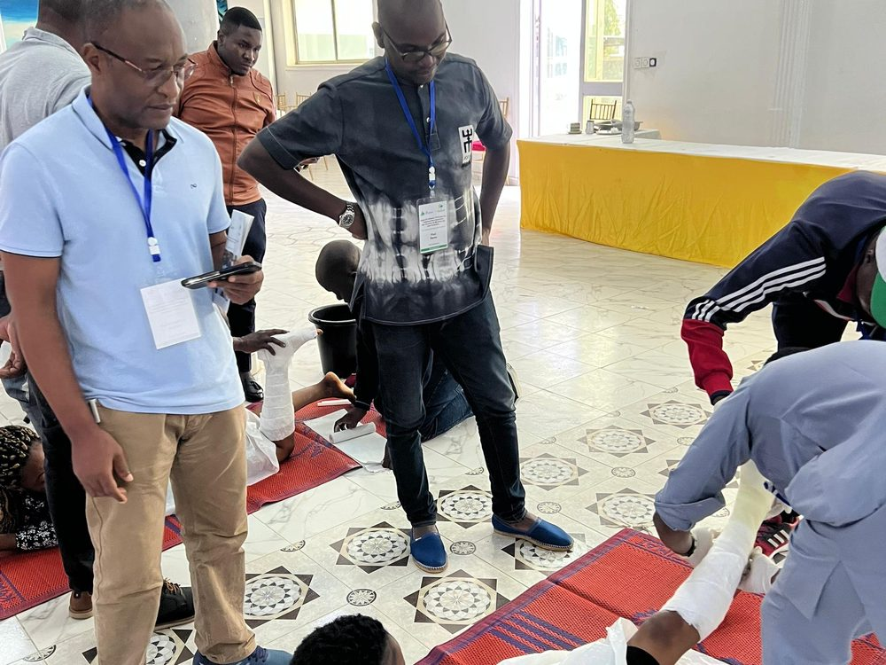
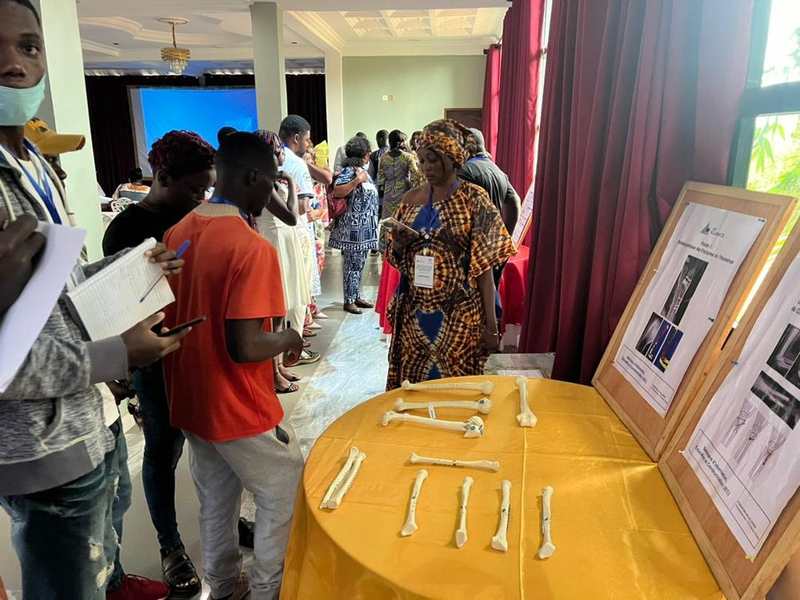
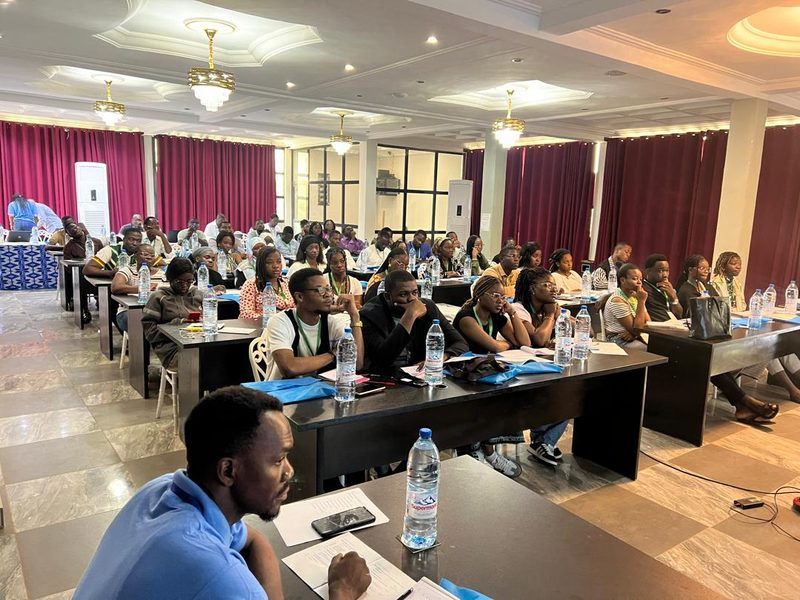
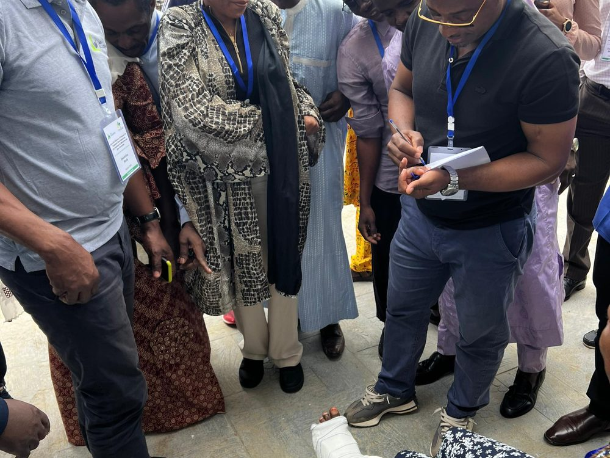
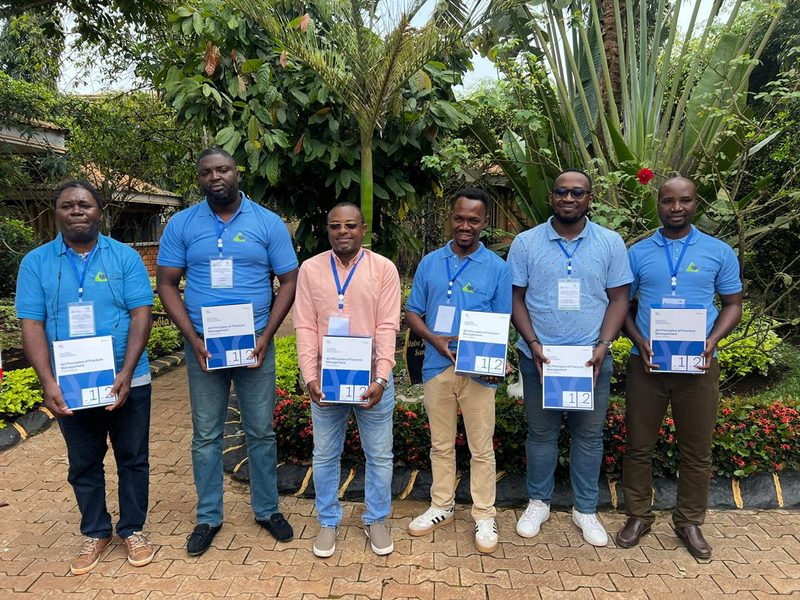
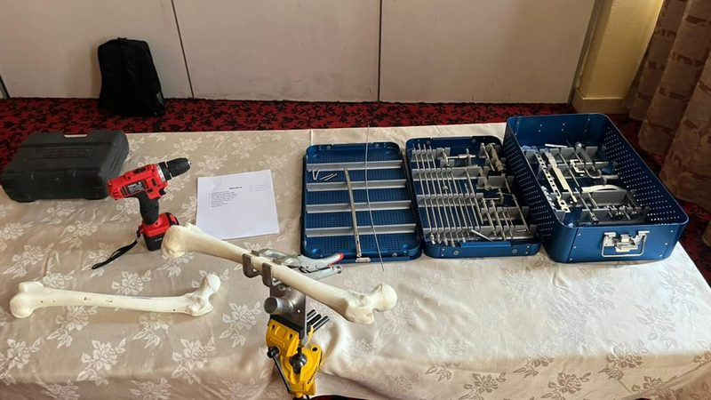
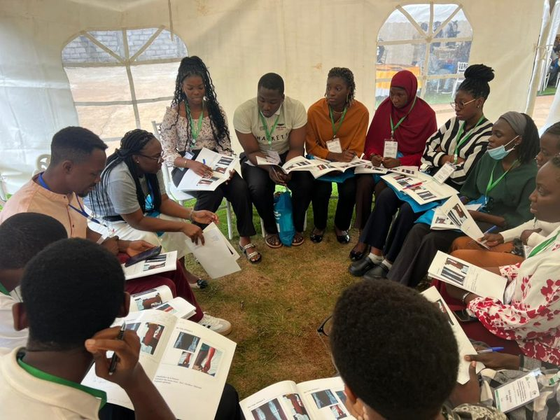

Vidéothèque
Les démonstrations techniques filmées pendant les sessions et les comptes rendus vidéo des séminaires. Les vidéos sont hébergées sur la chaîne officielle de l’association.
Recherche
Filtrer par catégorie
Vidéothèque
Toutes les vidéos

Immobilisation plâtrée — préparation et pose

Traitement non opératoire — réduction et contention

Modèles osseux — repères anatomiques et planification

Séance plénière — retour en images

Travaux pratiques de contention — déroulé d’une séance

Pourquoi former les équipes à la prise en charge des fractures

Préparation de la table d’instruments

Travail en petits groupes — étude de cas
Les vidéos de démonstration montrent des gestes réalisés en situation de formation, sur modèle osseux ou en simulation encadrée. Elles ne remplacent ni un cours encadré ni la lecture des recommandations en vigueur.
Contribuer
Publier une vidéo
Les enseignants peuvent proposer une séquence filmée pendant une session.